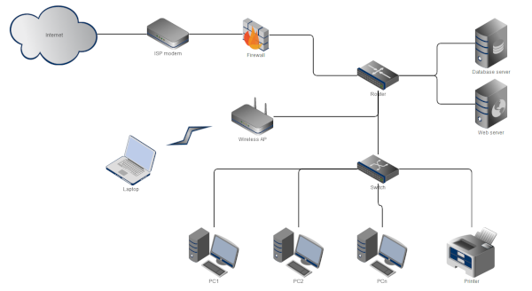

Introduction to Networking
Objectives
- Define a computer network
- Discuss the advantages and disadvantages of computer networks.
- Describe the main types of computer network including:
- Personal Area Network (PAN)
- Local Area Network (LAN)
- Wide Area Network (WAN)
- Define the Internet
- Describe the difference between the Internet and the World Wide Web
The primary motivation to connecting computers together in a network is to communicate share resources. The resources can include applications, files and hardware such as printers. The devices on the network need to be connected using either cables or wireless technology thus enabling data to be passed from one device to another.
Some computer networks will incorporate a server. The server is a powerful computer that acts as a central hub for a variety of services in a network e.g. there may be an email server, a web server, a file server etc.. These may be separate devices or housed in one device depending on the network needs. In such a set up each computer connected to a server is known as a client.
A computer that is not connected to a network is called a standalone computer.
Networks come in different shapes and sizes. On a personal level we may connect bluetooth speakers or ear buds to our laptop along with our mobile phone; or we'll have a local network in our home to stream films to different devices, there'll be similar local networks operating in schools and businesses. Finally, there is the network that covers a wide geographical area. The largest of these we call the Internet and probably access most days but larger global organisations may run their own wide area network to enable employees in the Europe share data with other employees based, say, in the USA.
Networking computers together comes with many advantages, but also some disadvantages.
Advantages of networks
Resource Sharing:
It's the primary motivation behind networking devices together. The types of resources we may want to share might include:
- Files: For example an employee, Alice, creates a document containing important project information and another employee, Bob, needs access to this document to review and make edits. Alice saves this document in a shared folder on the Local Area Network (LAN) so that Bob can access it and make any changes. Both Alice and bob can collaborate on the same document without physically transferring the file and changes made by one are immediately visible to the other.
- Printers: high quality printers are an expensive item for companies/individuals to purchase. The office has a high-quality colour printer that is shared among all employees as it can be connected to the LAN, making it accessible to all computers, any employee can send a print job the shared printer. This is cost-effective and a good use of resources as one printer serves the entire office.
- Shared Database: A company has a centralized database to store customer information. The database is hosted on a server connected to the LAN. All employees, authorized with proper permissions, can access and update customer data. This minimises data duplication and ensures data consistency across the organization.
- Collaborative Software Tools: A company uses collaborative software for project management. The project management tool is web-based and accessible through the LAN. Team members can simultaneously view and update project tasks, timelines, and documents thus enabling real-time collaboration and streamlining the project management process.
- Shared Internet Connection: Often overlooked as a resource! A home or an organisation will have a single Internet connection that needs to be distributed among multiple devices. A router connected to the LAN distributes the Internet connection to all computers in the workplace/home.
Communication:
Facilitates efficient communication through email, chat, and video conferencing. Consider the scenario of an office with multiple departments, each having its own set of computers connected to a Local Area Network (LAN). Efficient communication within and between departments is crucial for the smooth operation of the organization. Networking will enable the following functions between the various departments:
- Email Communication: Employees need to communicate with each other for project updates, announcements, and general correspondence. the LAN is equipped with an email server enabling employees to send and receive emails their computers/smartphones connected to the LAN.
- Instant Messaging (Chat): Teams within the office need to have quick and real-time discussions. The LAN needs to support an instant messaging application.
- Video Conferencing: Project teams, despite being in different parts of the office, need to have face-to-face meetings. The LAN can support video conferencing tools enabling teams to meet using using webcams and microphones.
- Internal Intranet Portal: The organization needs a centralized platform for sharing important announcements, policies, and resources and the LAN can host an internal website to host these documents and other information.
Centralized Data Management:
Centralized control and management of data. Consider an office where multiple teams collaborate on projects that involve sharing and managing various types of data. A centralized approach to data management ensures that information is organized, secure, and easily accessible.
- File Server for Document Storage: Various teams in the office need to store and access project documents. A dedicated file server is set up on the LAN and all project-related documents are stored in specific folders on this central file server. This reduces unnecessary duplication and ensures uniform access to project files. Also simplifies data backup and recovery procedures.
- Database Server for Information Storage: The organization maintains a customer database that multiple departments need to access. As noted before, minimising data redundancy and enabling data backup and recovery procedures.
- Network-Attached Storage (NAS) for Shared Resources: Teams collaborate on projects that involve large multimedia files. Large files, such as graphics, videos, and design files, are stored and accessed through the NAS.
- Access Control and Permissions: Different teams have varying levels of access to sensitive data. The LAN employs access control and permissions settings so users are granted specific permissions based on their roles, ensuring data security and preventing unauthorized access to confidential information.
Disadvantages of networks:
Security Concerns:
Risks of unauthorized access and data breaches. Each of these will be covered in more detail in the section on Network Security
- Unauthorized Access to Shared Files: Unauthorized individuals can view, modify, or delete confidential files and compromise data integrity and confidentiality for an organisation.
- Malware Spread Through Network: A virus can spread from computer to computer when connected together leading to data loss or system disruption.
- Man-in-the-Middle Attacks: This is where an attacker intercepts communication between two users on the LAN, eavesdropping on sensitive information, compromising data privacy and potential identity theft.
- Password Sniffing: This is where an attacker uses a network sniffer tool to capture plaintext passwords transmitted over the LAN and can then gain access to the network using that user's login information.
- Denial-of-Service (DoS) Attacks: An attacker floods the LAN with excessive traffic, overwhelming the network's capacity and causing downtime.
Dependency:
System failures or network issues can affect multiple users.
- Single Point of Failure: Where a LAN relies on a single central server for critical services, should it fail all connected devices lose access to essential services with a significant interruption of business operations.
- Dependency on Internet Connectivity: The LAN relies heavily on a stable Internet connection for various tasks and can only function with a working Internet connection.
Cost:
Initial setup and maintenance can be expensive e.g.
- Initial Setup Costs: Implementing a LAN in an organization involves purchasing hardware, software, and hiring professionals for installation.
- Maintenance and Upkeep Expenses: Regular maintenance, updates, and troubleshooting are required to keep the LAN operational.
- Training Costs for Personnel: Employees need training to use and manage the LAN effectively.
- Cost of Security Measures: Implementing robust security measures, such as firewalls and intrusion detection systems, to protect the LAN bringing an additional financial burden to ensure the network's security.
- Scalability Costs: The organization experiences growth, and the LAN needs expansion to accommodate more users and devices.
- Unexpected Emergency Costs: Unforeseen events, such as natural disasters or cyber-attacks, result in the need for emergency responses.
Types of Network
Personal Area Network (PAN)

A Personal Area Network (PAN) is a small network for personal use connecting devices within an individual's workspace such as a smartphone, laptop, and tablet via Bluetooth.
It is limited in both size and range and usually only used for personal devices. A Bluetooth PAN uses radio waves to communicate with devices and has a range of only a few metres.
Local Area Network (LAN)

A Local Area Network (LAN) connects computers and devices within a limited geographic area, like a single building, campus and domestic home. The LAn is typically managed by a single organisation.
Wide Area Network (WAN)

A Wide Area Network (WAN) spans a large geographic area and connects multiple LANs together, for examples, branch offices of a company. The Internet is the ultimate Wide Area Network - a network of interconnected networks.
The Internet
The Internet is a global network of interconnected computers that communicate with each other using standardized protocols. It enables the exchange of information, communication, and access to resources worldwide.
The Internet is decentralized, meaning there is no single point of control that is no single entity or authority has absolute control over the entire network. Instead, the Internet consists of a vast interconnected web of networks and servers, each independently operated and managed. This decentralization contributes to the Internet's robustness. If one part of the network fails or is disrupted, data can find alternative paths to reach its destination. Control over the Internet is distributed among various entities, including Internet service providers (ISPs), network administrators, content providers, and users. Each entity manages its own part of the network.
Some countries seek to exert control and regulate the flow of information within their borders. This is often driven by political, cultural, or security considerations. They may implement censorship and content filtering to control what citizens can access online. This may involve blocking specific websites, social media platforms, or content that is deemed inappropriate or politically sensitive.
Governments can regulate ISPs to control the flow of information. This may involve requiring ISPs to comply with government directives, block specific content, or monitor user activities. Some countries implement laws requiring Internet companies to store user data within the country's borders. This allows governments to exert more control over the data and access it when necessary. In extreme cases, governments may resort to shutting down or disrupting Internet services within their borders. This could be during times of political unrest, protests, or to control the spread of information during sensitive events.
The difference between the world wide web and the Internet
The Internet is the infrastructure or the physical network of computers connected globally that uses a standard protocols to facilitate communication and data transfer (TCP/IP).
The World Wide Web (WWW) is a collection of interconnected documents and resources, accessed through the Internet, using web browsers. Accessing these documents relies on protocols such as HTTP making it just one of many services running on the foundational network of the the Internet.